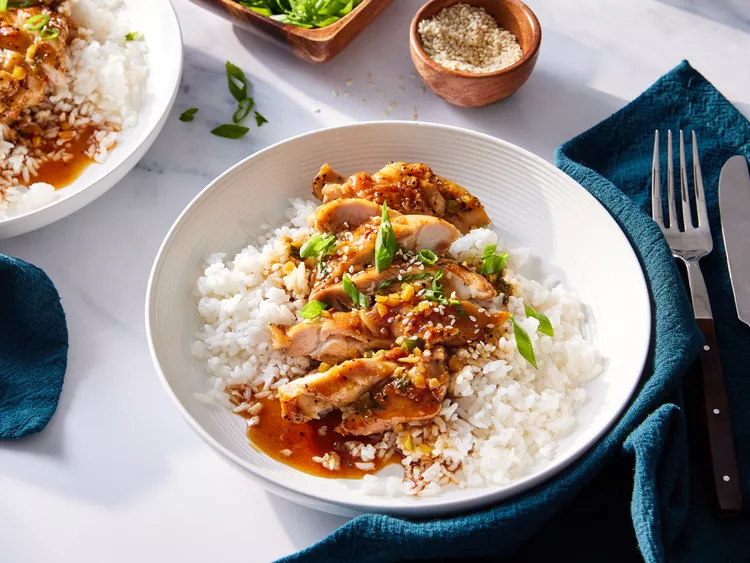

Ginger Chicken

Description
Ginger chicken is a Chinese dish typically made with fresh garlic, ginger, and scallions with a sticky brown
sauce over rice and noodles.
Ingredients
- ¼ cup packed light brown sugar
- 3 tablespoonssoy sauce
- 2 tablespoonsShaoxing wine or rice vinegar
- ⅛ teaspoonfreshly ground white pepper
- ½ cupplus 1 tablespoon tap water, divided
- 4 scallions, sliced
- 1 tablespoonolive oil
- 1 ½ poundsboneless, skinless chicken thighs (about 6 thighs)
- ½ teaspoonkosher salt
- ¼ teaspoon freshly ground black pepper
- 1 ½ tablespoonsfresh ginger
- 2clovesgarlic, chopped
- 2 teaspoons corn starch
- sesame seeds for garnish
- 2 cups cooked long-grain white rice, for serving
Steps
- Gather all ingredients
-
Whisk together brown sugar, soy sauce, Shaoxing wine, white pepper, and 1/2 cup of the water until combined;
set aside. Thinly slice scallions, and separate white and light green parts from dark green parts; set
aside.
- Heat oil in a large skillet over medium-high until shimmering. Sprinkle both sides of chicken evenly with
salt and black pepper. Add chicken to skillet, rounded sides down, and cook until golden brown, about 10
minutes. Flip chicken, and continue to cook until a thermometer inserted into thickest portion registers 165
degrees F (73 degrees C), about 5 minutes. Transfer to a large plate, and cover loosely with aluminum foil
to keep warm.
- Add ginger, garlic, and reserved white and light green scallion parts to drippings in skillet, and cook over
medium-high, stirring often, until garlic and ginger are fragrant and lightly toasted, and scallions are
starting to fall apart, 3 to 4 minutes.
- Whisk together cornstarch and remaining 1 tablespoon water until smooth. Add cornstarch mixture and soy
sauce mixture to skillet. Bring to a boil over medium-high. Reduce heat to low to maintain a simmer, and
cook, stirring constantly, until sauce thickens and coats the back of a spoon, about 1 minute. Remove from
heat.
- Return chicken and any residual juices to skillet, tossing to coat evenly in soy sauce mixture. Garnish with
sesame seeds and dark green scallion parts. Serve over rice.